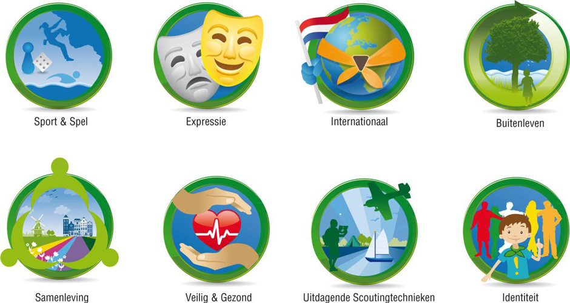

Spelvisie
Bij Scouting Bosgeest maken we gebruik van de doorlopende leerlijn die vanuit Scouting Nederland wordt aangeboden. Dit houdt in dat wij continu voortborduren op wat onze jeugdleden al weten. Zo doen onze jeugdleden vaardigheden op die niet zo moeilijk lijken, omdat ze dit stapje voor stapje leren. Maar ongemerkt leren ze door de jaren heen, heel veel. De jongste groepen hebben bijvoorbeeld een fantasievol thema dat het vermogen tot verbeelding, avontuur, creativiteit en vindingrijkheid aanspreekt. De programma’s van opvolgende speltakken sluiten volledig op elkaar aan dankzij de doorlopende leerlijn binnen de Scoutingmethode. Op deze manier blijven scouts zich continu ontwikkelen. Het leuke aan deze vaardigheden is dat dit zichtbaar is op de uniformen van de leden: om de persoonlijke groei zichtbaar te maken ontvangen ze insignes.
Niet-formeel leren
Bij ‘leren’ wordt vaak gedacht aan kennis en vaardigheden, maar de competenties die kinderen bij Scouting ontwikkelen zijn ook gericht op het sociale aspect. Samenwerken, zorgen voor elkaar, respect voor de omgeving; dat zijn belangrijke aandachtsgebieden van het Scoutingprogramma. De niet-formele manier van leren bij Scouting zit tussen formeel (op school, met vastgestelde doelen en eisen) en informeel (spontaan, in het dagelijks leven) leren in. Door de stimulerende omgeving en uitdagende activiteiten leren kinderen en jongeren bij Scouting heel veel, zonder dat ze dit zelf zo ervaren, want plezier en gezelligheid staan centraal.
Acht activiteitengebieden
Scouting Bosgeest maakt gebruik van de verschillende activiteitengebieden om variatie en uitdaging in het programma aan te brengen. De activiteiten richten zich lang niet alleen op het ontwikkelen van vaardigheden, maar ook op houding en gedrag.
-
Uitdagende Scoutingtechnieken: activiteiten rondom een techniek, zoals hakken, stoken, kaart en kompas, routetechnieken, pionieren, zeilen en kamperen.
-
Expressie: activiteiten waarmee kinderen zich kunnen uitdrukken, zoals dansen, filmen, handvaardigheid, toneel spelen, muziek maken en schrijven.
-
Sport & Spel: sporten, postenspelen, renspelen, gezelschapsspelen en teamspelen.
-
Buitenleven: activiteiten rondom het beleven van de natuur en overleven in de natuur, zoals survival, kennis van plant en dier, milieu, natuurbeheer en weer.
-
Identiteit: activiteiten die te maken hebben met wie kinderen zelf zijn (zelfbeeld), welke levensovertuiging ze hebben en de identiteit van hun groep.
-
Internationaal: activiteiten rondom kennis over Scouting wereldwijd, internationale uitwisselingen en andere culturen.
-
Samenleving: activiteiten die te maken hebben met de eigen omgeving, het cultureel erfgoed en de maatschappij (maatschappelijke participatie).
-
Veilig & Gezond: activiteiten rondom voeding en veiligheid (zowel op fysiek als op sociaal-emotioneel gebied).
